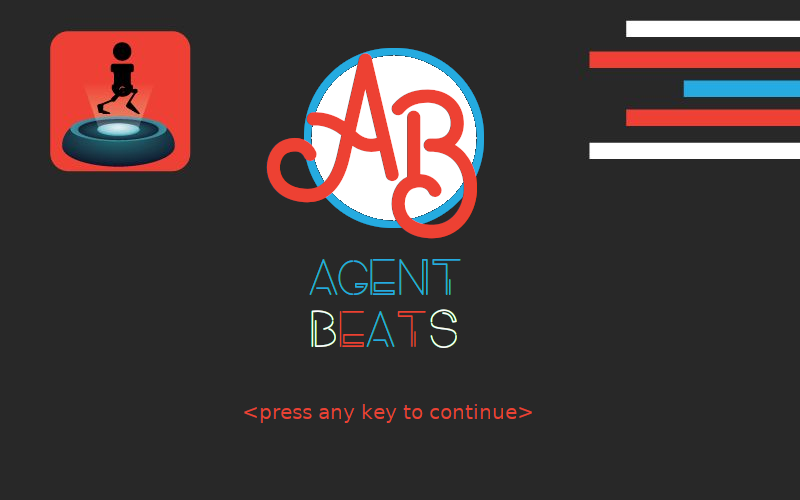
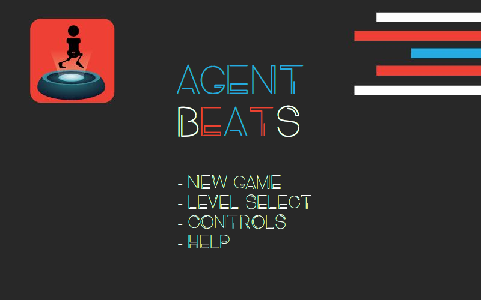
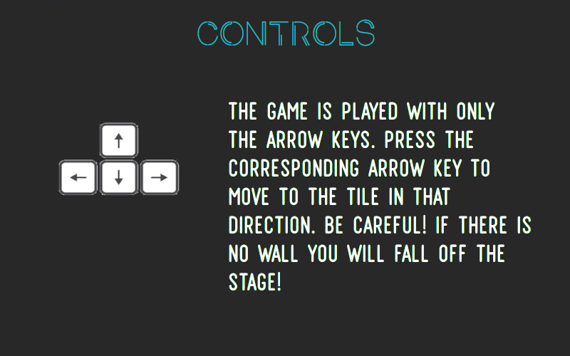
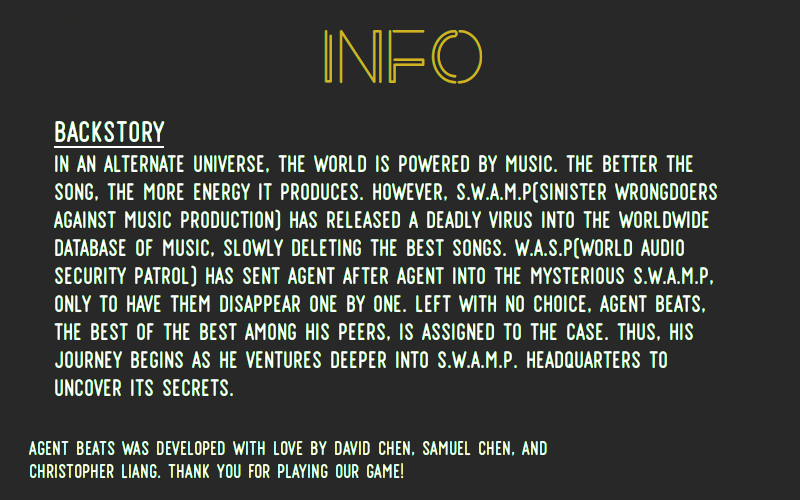
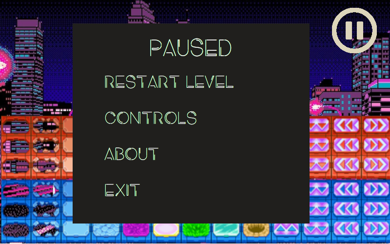
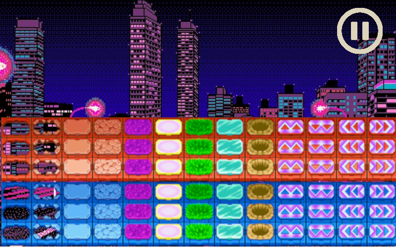

|
|
Agent Beats
Game Design Document
by David Chen, Chris Liang, Samuel Chen
|
INTRODUCTION
This document describes a game called "Agent Beats", which is designed to be a 2D top-down rhythm puzzler. The game will employ sprite-based animation, tiled backgrounds, collision detection, physics, AI, efficient memory management, and more basic 2D game techniques.
TECHNOLOGY
Agent Beats will be developed for the Windows Platform using the Phaser game engine, which is a free, open-source HTML5 game framework. OpenGL will be used as the underlying rendering technology. Phaser will also be used for all music and sound effects management. All music and artwork will be created in-house with Adobe Creative Suite and GarageBand. Other technologies may be added as development continues.
BACK STORY
In an alternate universe, the world is powered by music. The better the song, the more energy it produces. S.W.A.M.P(Sinister Wrongdoers Against Music Preservation) has released a deadly virus into the worldwide database of music, slowly deleting the best songs. W.A.S.P.(World Audio Security Patrol) has sent agent after agent into the mysterious SWAMP, only to have them disappear one by one. Left with no choice, Agent Beats, the best of the best among his peers, is assigned to the case. Thus, his journey begins as he ventures deeper into SWAMP headquarters to uncover its secrets.
OBJECTIVE
SWAMP doesn’t like intruders and, as such, has rigged its headquarters with a wide assortment of booby traps. Agent Beats must successfully navigate through these traps, with each level becoming progressively harder. He must make it to the top floor of SWAMP, where the virus is being transmitted from, and destroy it to save the world.
GAMEPLAY
The game will be a top-down tile-based game. Beats will be able to move in 4 directions, up,down,left,right. He will move one tile per button press.
Each tile in the level is potentially dangerous, what with the various traps set. However, the traps have a specific pattern, as they match the beat of the background music, so Beats must move along with the cadence of the music. The tiles may also change to the beat of the background music, so it is possible for a tile to disappear right underneath Beats. The traps and tiles follow a specific pattern, so it is up to Beats to cleverly observe and follow the pattern to successfully navigate through each level.
CONTROLS
This game will be played with just the arrow keys. Once started, use the following:
- LEFT-ARROW - Move Left
- RIGHT-ARROW - Move Right
- UP-ARROW - Move Up
- DOWN-ARROW - Move Down
- ESC - This pauses the game and presents a pop-up window to the player asking them to continue when they are ready. If a game is not in progress, ESC does nothing.
GRAPHICAL USER INTERFACE
As far as the GUI is concerned, if we consider:
|
Splash Screen - The splash screen GUI simply presents a game logo and a Start button for the user to press when they are ready to play. Upon pressing it, a brief scripted sequence is played explaining a little about Agent Beats and the back story for the game. While playing the message "Press ESC to Skip" should be displayed at the bottom of the screen.
|

|
In-Game Menu - Before the game starts, the user can choose from several options:
- New Game - Start a new game
- Level Select - Bring user to the level select screen
- Controls - Displays an info screen that includes a description of all game controls.
- Help - Brings up info about the game's backstory and who the game developers are
|

|
| Controls- The user is brought here from choosing the Controls option from the main menu |

|
| Info- The user is brought here from choosing the Help option from the main menu |

|
| Level Select- The user is brought here from choosing the Level Select option from the main menu |

|
Paused Menu- after the game starts, the user can pause the screen and choose from several options
- Restart Level - Restarts the level
- Controls - Displays an info screen that includes a description of all game controls.
- About - Brings up info about the game's backstory and who the game developers are
- Exit - Exits to the main menu
|
 |
| Level Select- An approximation as to what the gameplay should look like |
 |
NOTE: placeholder stock art will be replaced with original art. it is only there to show an idea of what our game will look like
ARTWORK
All artwork in the game will be original. The following needs to be created:
Agent Beats - will only have one outfit. Will require animations for:
- Moving Right
- Moving Left
- Moving Up
- Moving Down
- Dying
- Idle State
Booby Traps - there will be various booby traps e.g. spikes, lasers, etc. that will require animations for when they go off. Each one will have these basics animations:
- Activate
- Collide with Player
- Idle
-Background and Floor Tiles - The background will just be for decoration, but we will have a dynamic changing background to add to the feel of each level. Basic tiles will be used for floor. The tiles will have an outline to clearly define where each tile is. The tile may change color/texture according to the music.
Next Level Portal - Each level will have a Portal marking the goal tile. Stepping on this portal will complete the current level and advance Beats to the next level.
-Splash Screen - The Splash Screen will just be static artwork of Beats and his world. It will display on game load and on the main menu.
SOUND EFFECTS
All sound effects will be original. Sounds must be made to coincide with each of the following events:
Moving
Traps going off
Agent dying
Agent clearing a level
MUSIC
Since each level must match the cadence of the background music, the music will be a very important part of the game. Each level will have a unique song that all the traps and tile movements will coincide with. Music will be originally made using GarageBand and Audacity.